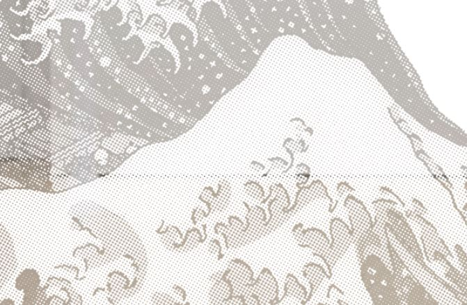
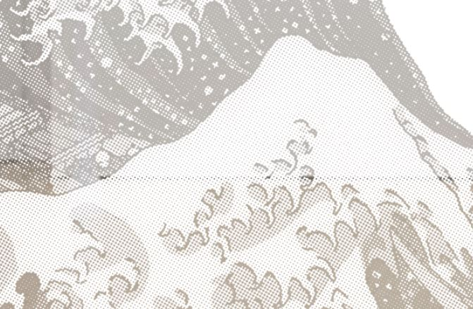

The Alienated (2026) attempts to reconstruct, through an entirely new visual logic, the relationship between viewer and artwork. It is also conceived as a rebellion against image fetishism and the commodification of art. In this body of work, any attempt to digitize the piece is destined to fail—including photography, video recording, and scanning. By designing the work to resist capture, I seek to challenge a regime of viewing and evaluation dominated by visual images.
We live in an era in which “perfect” images and meticulous post-production increasingly mediate our perception of the world; we come to interpret lived reality through the logics of image-making and textual editing. This distortion impoverishes the meaning of lived experience and intensifies an attachment to perfected appearances. In response, I employ mirror pigment as both medium and conceptual device. Through silkscreen printing, I reproduce canonical Renaissance paintings widely regarded as emblematic of “high art,” such as Mona Lisa, while juxtaposing painterly mixtures of pigment with reflective mirror surfaces on a two-dimensional plane.
Through reflection, the works fold the viewer and the exhibition space back into the image, interrupting the capitalist production of seamless spectacle. In doing so, the series proposes a refusal of commodity fetishism and gestures toward re-establishing a connection between viewers and their lived world.


 
